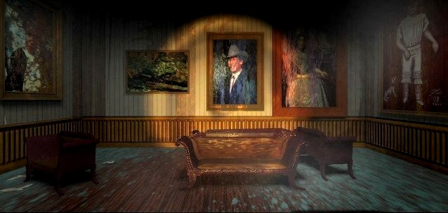
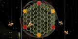
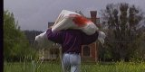

"Yes, but is it art?"
This is a fairly quiet room in the game, no big scenes take place in this part of the house. You find some objects and a puzzle, but in this site it's a room with importance. It's the gallery! Click on the small pictures to see their bigger brothers. If you look, you may find me on some of the big pictures. 